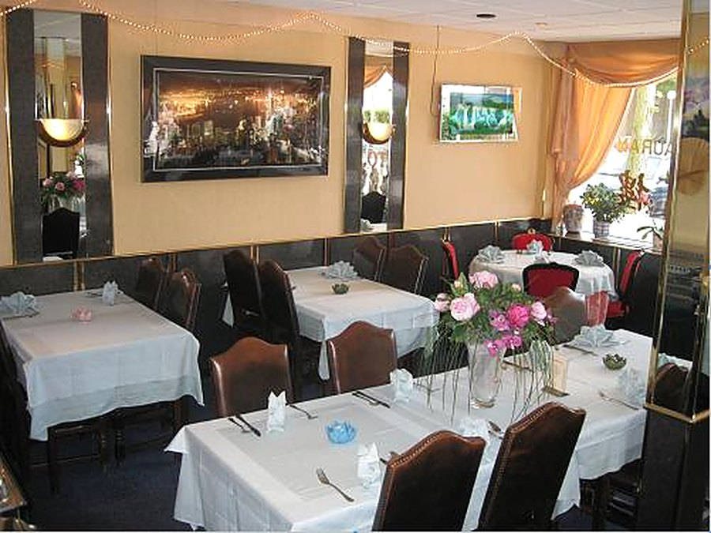

Onze afhaalkaart
Alles zelfgemaakt. Bel of app uw bestelling door en haal het op aan de Kapelstraat Zuid.
Alle gerechten met nasi of bami in plaats van witte rijst: klein € 1,20, extra groot € 3,50.
Met mihoen of Chinese bami in plaats van witte rijst: € 3,50 extra. Liever een vast menu? Bekijk onze afhaalmenu's A t/m D en het maandmenu.
Soepen
- 1Tomatensoep€ 5,10
- 2Kippensoep€ 5,10
- 3Champignonsoep€ 5,10
- 4Haaienvinnensoep€ 5,10
- 5Groentesoep€ 5,10
- 6Si-Chuangsoeppittig gekruide soep€ 6,50
- 7Wan Tan soep€ 6,50
- 8Lotus soepgevuld met kipfilet, garnalen, krab en groenten€ 6,50
Voor- en bijgerechten
- 10Chinese mini loempia's2 stuks€ 4,50
- 11Mini loempia's8 stuks€ 5,30
- 12Loempia€ 6,60
- 13Loempia Lotus Speciaalrundvlees, 1 stokje saté€ 9,90
- 14Gebakken grote Chinese garnalen met saus4 stuks€ 10,10
- 15Pangsit goreng met zoetzure saus8 stuks€ 6,30
- 16Pisang gorenggebakken bananen, 6 stuks€ 6,30
- 17Pikante saus of satésaus€ 3,80
- 18Witte rijst€ 4,80
- 20Kroepoek€ 3,80
- 21Atjar€ 4,60
- 23Saté ajam4 stokjes€ 7,80
- 24Saté babi4 stokjes€ 7,80
Speciaal combinatiegerechten
- 25Babi pangang, foe yong hai, 1 stokje saté, nasi of bami€ 16,50
- 26Babi pangang, tjap tjoy, 1 stokje saté, nasi of bami€ 16,50
- 27Babi pangang, koe loe kai, 1 stokje saté, nasi of bami€ 16,50
- 28Babi pangang, kip knoflook, 1 stokje saté, nasi bami€ 16,50
- 29Babi pangang, Chinese garnalen, 1 stokje saté, nasi of bami€ 16,50
- 30Babi pangang, daging smoor, 1 stokje saté, nasi of bami€ 16,50
- 31Tjap tjoy, foe yong hai, 1 stokje saté, nasi of bami€ 16,50
- 32Tjap tjoy, kip kerry, 1 stokje saté, nasi of bami€ 16,50
- 33Tjap tjoy, kip knoflook, 1 stokje saté, nasi of bami€ 16,50
- 34Tjap tjoy, daging roedjak, 1 stokje saté, nasi of bami€ 16,50
- 35Foe yong hai, kip knoflook, 1 stokje saté, nasi of bami€ 16,50
- 36Foe yong hai, koe loe kai, 1 stokje saté, nasi of bami€ 16,50
- 37Foe yong hai, Chinese garnalen, 1 stokje saté, nasi of bami€ 16,50
- 38Foe yong hai, kip kerry, 1 stokje saté, nasi of bami€ 16,50
Nasi gerechten
- 39Nasi goreng€ 7,80
- 40Nasi goreng speciaal€ 13,30
- 41Nasi goreng met 3 stokjes saté€ 13,30
- 42Nasi goreng met kipfilet€ 14,20
- 43Nasi goreng met varkensvlees€ 14,20
- 44Nasi goreng ossenhaas€ 16,90
- 45Nasi goreng met garnalen€ 16,90
- 46Nasi Lotus speciaalbabi pangang, garnalen, foe yong hai, koe loe kai en saté€ 21,50
- 47Nasi compleettjap tjoy, foe yong hai, babi pangang€ 21,50
- 48Nasi yong chowspeciale nasi goreng met stukjes cha sieuw, garnalen, champignons en doperwten€ 15,70
Bami gerechten
- 49Bami goreng€ 7,80
- 50Bami goreng speciaal€ 13,30
- 51Bami goreng met 3 stokjes saté€ 13,30
- 52Bami goreng met kipfilet€ 14,20
- 53Bami goreng met varkensvlees€ 14,20
- 54Bami goreng ossenhaas€ 16,90
- 55Bami goreng met garnalen€ 16,90
- 56Bami Lotus speciaalmet babi pangang, garnalen, foe yong hai, koe loe kai en saté€ 21,50
- 57Bami compleettjap tjoy, foe yong hai, babi pangang€ 21,50
- 57aYong chow minChinese bami met stukjes cha sieuw en garnalen€ 15,70
Mihoen gerechten
- 58Mihoen met vlees€ 14,20
- 59Mihoen met kipfilet€ 14,90
- 60Mihoen met ossenhaas€ 18,40
- 61Mihoen met garnalen€ 18,40
- 62Mihoen speciaal met kip en vlees€ 15,80
- 63Mihoen Lotus speciaalmet babi pangang, garnalen, foe yong hai, koe loe kai en saté€ 23,40
- 64Mihoen sing chowmet garnalen, vlees, groenten en kerry€ 15,70
Ei gerechten met rijst
- 65Foe Yong Hai met vlees€ 14,90
- 66Foe Yong Hai met kipfilet€ 15,20
- 67Foe Yong Hai met garnalen€ 19,20
- 68Foe Yong Hai met krab€ 19,20
- 69Foe Yong Hai Lotus Speciaal€ 16,70
- 70Foe Yong Hai speciaal met kip en vlees€ 15,40
Groenten gerechten met rijst
- 71Tjap Tjoy met vlees€ 14,90
- 72Tjap Tjoy met kipfilet€ 15,20
- 73Tjap Tjoy speciaal met kip en vlees€ 16,10
- 74Tjap Tjoy met ossenhaas€ 19,20
- 75Tjap Tjoy met garnalen€ 19,20
- 76Tjap Tjoy Lotus speciaal€ 16,70
- 77Chinese seizoensgroenten met vlees€ 16,70
- 78Chinese seizoensgroenten met kippenvlees€ 16,70
- 79Chinese seizoensgroenten met Chinese garnalen€ 19,90
Varkensvlees met rijst
- 80Babi pangang€ 17,90
- 80aBabi pangang met ketjapsaus€ 18,40
- 81Babi ketjap€ 16,90
- 82Cha Sieuwgeroosterd varkensvlees€ 19,50
- 83Geroosterd varkensspek€ 19,50
- 84Koe loe yukgepaneerd varkensvlees met zoetzure saus€ 17,60
- 85Varkensvlees met champignons€ 16,10
- 86Varkensvlees met kerrysaus€ 16,10
- 87Varkensvlees met pikante saus€ 16,10
- 88Varkensvlees met paprika€ 16,10
- 89Varkensvlees met Gon baosaus€ 17,60
- 90Varkensvlees met Hui Kuo saus€ 17,60
- 91Varkensvlees met knoflook- en chilisaus€ 17,60
- 92Tau si yukvarkensvlees met zwarte bonensaus€ 17,60
- 93Yao gou yukvarkensvlees met cashewnoten€ 17,60
- 94Po Lu yukvarkensvlees met ananas en zoetzure saus€ 16,90
- 95Tong koe yukvarkensvlees met Chinese champignons€ 17,60
Kip met rijst
- 96Ajam pangang€ 18,90
- 97Kipfilet met champignons€ 16,70
- 98Kipfilet met kerrysaus€ 16,70
- 99Kipfilet met pikante saus€ 16,70
- 100Kipfilet met ketjapsaus€ 16,70
- 101Kipfilet met Gon baosaus€ 18,10
- 102Zhi ma kaigepaneerde kipfilet met sesamzaad en zoetzure saus€ 18,10
- 103Hui kuo kaikipfilet in een Hui kuosaus, licht pikant€ 18,10
- 104Koe loe kaigepaneerde kipfilet met zoetzure saus€ 17,60
- 105Kipfilet met knoflook- en chilisaus€ 18,10
- 106Tau si kaikipfilet in zwarte bonensaus€ 18,10
- 107Po lu kaikipfilet met ananas en zoetzure saus€ 16,90
- 108Yao gou kaikipfilet met cashewnoten€ 18,10
- 109Tong koe kaikipfilet met Chinese champignons€ 18,10
Ossenhaas met rijst
- 110Ossenhaas met champignons€ 21,20
- 111Ossenhaas met kerrysaus€ 21,20
- 112Ossenhaas met tomatensaus€ 21,20
- 113Ossenhaas met knoflook- en chilisaus€ 21,20
- 114Tau sin ngawossenhaas met zwarte bonensaus€ 21,20
- 115Tong koe ngawossenhaas met Chinese champions€ 21,20
- 115AGon Bao ngawossenhaas met Gon baosaus€ 21,20
Garnalen met rijst
- 116Koe loe hagepaneerde garnalen balletjes met zoetzure saus€ 20,80
- 117Oedang watjapgebakken garnalen met zoetzure saus€ 20,80
- 118Chinese garnalen met kerrysaus€ 20,80
- 118AChinese garnalen met pikante saus€ 20,80
- 119Chinese garnalen met knoflook- en chilisaus€ 21,50
- 120Tau si haChinese garnalen met zwarte bonensaus€ 21,50
- 121Tong koe haChinese garnalen met Chinese champignons€ 21,50
- 122Gon Bao haChinese garnalen met Gon baosaus€ 21,50
Indische gerechten
- 123Nasi /Bami rames gewoon€ 15,10
- 124Nasi /Bami rames speciaal€ 17,80
- 125Nasi /Bami rames Lotus€ 21,90
- 126Gado gado€ 12,90
- 127Daging smoor / Daging roedjak€ 19,50
- 128Indische rijsttafelsgroenten, rundvlees, foe yong hai, saté, kippenbout, gado gado, kleine kroepoek en pisang goreng€ 22,10 p.p
Vegetarische gerechten
- 130Foe yong hai zonder vlees€ 14,90
- 131Tjap tjoy zonder vlees€ 14,90
- 132Mihoen zonder vlees€ 14,90
- 133Chinese seizoensgroenten zonder vlees€ 17,10
- 134Chinese seizoensgroenten met tau fu€ 17,10
- 135Tau fu met Chinese champignons€ 17,10
- 136Pekingeendvegetarisch€ 17,10
Cantonese en Szechuan specialiteiten
- C1Jiao yan hagepelde grote Chinese garnalen met verse pepers en knoflook€ 22,10
- C3Tiek pang minChinese bami met fijngesneden varkensvlees en groenten€ 18,90
- C4Wu xiang tinvijf hemel smaak van groenten, garnalen, vlees en cashewnoten€ 20,80
- C7Tsoi sam kaikipfilet met Chinese groenten€ 18,20
- C8Kaai lan ha kowChinese garnalen met broccoli en chao ko€ 21,50
- C10Tong tsoh yugeb. tongfilet met zoetzure saus€ 20,50
- C11Tiek pang ngawplakjes ossenhaas met zwarte pepersaus€ 21,60
- C12San Cha kaikipfilet met groenten en san cha saus€ 18,20
- C14Sam siengarnalen, kipfilet varkensvlees, en Chinese groenten€ 20,70
- C15Peking eendgeroosterde peking eend met pikante saus of oestersaus€ 20,50
- C16Hai sing polkrab, garnalen, tongfilet en groenten op Chinese wijze bereid€ 22,30
- C17Da Hanossehaas, kipfilet, varkensvlees met divers groenten€ 20,50
- C18Jiang Bao Kaikipfilet met diverse groenten jiang bao bonensaus€ 18,20
- C19Kaai Lan Ngawossenhaas met broccoli€ 20,90
- C20Yu Hsing yukgesneden varkenshaas met diverse groenten in pikante saus€ 18,50
Rijsttafels om af te halen
Speciaal aangeboden, prijzen per persoon.
136R Originele Chinese rijsttafel
Vanaf 2 personen
- Tomatensoep
- Saté
- Pangsit
- Babi pangang
- Kerrie corners
- Mini loempia's
- Gon bao Kai kipfilet met Gon baosaus, groenten en cashewnoten
- Sun zhi ha garnalen met knoflook- en chilisaus
3 personen: extra ossenhaas met zwarte pepersaus. 4 personen: extra gebakken vis met zoetzure saus. 6 personen: extra Peking eend.
137 Chinese rijsttafel
Vanaf 2 personen
- Kleine kroepoek
- Koe loe kai
- Foe yong hai
- Tjap tjoy
- Babi pangang
- Saté
- Chinese garnalen
- Gon bao Kai
138 Chinees-Indische rijsttafel
Vanaf 2 personen
- Kleine kroepoek
- Pisang goreng
- Grote Chinese garnalen
- Kipfilet met knoflook
- Rundvlees
- Gado gado
- Foe yong hai
- Babi pangang
- Tjap tjoy
- Saté
139 Rijsttafel Lotus
Chinees-Indisch, voor 6 personen
- Babi pangang
- Oedang watjap
- Koe loe kai
- Kipfilet met knoflook
- Rundvlees
- Wu xiang tin
- Ossenhaas met zwarte bonensaus
- Foe yong hai
- 6 stokjes saté
- Pisang goreng
- Kleine kroepoek
- Met rijst
Openingstijden en contact
Dinsdag t/m zondag open van 16.00 tot 20.30 uur, ook op feestdagen. Op maandag zijn we gesloten.
Reserveren of bestellen
Bel ons om een tafel te reserveren of uw afhaalbestelling door te geven. Een vraag? Stuur gerust een WhatsApp.
Openingstijden
| Maandag | Gesloten |
| Dinsdag | 16.00 – 20.30 |
| Woensdag | 16.00 – 20.30 |
| Donderdag | 16.00 – 20.30 |
| Vrijdag | 16.00 – 20.30 |
| Zaterdag | 16.00 – 20.30 |
| Zondag | 16.00 – 20.30 |
Feestdagen van 16.00 tot 20.30 uur. Gratis ruime parkeergelegenheid. Eten bestellen kan niet via de mail: bel ons even.